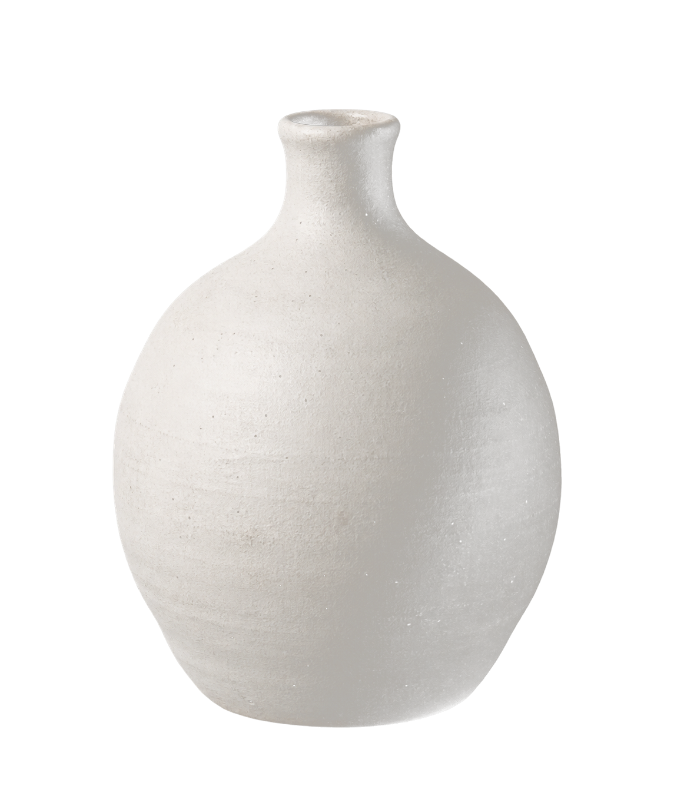
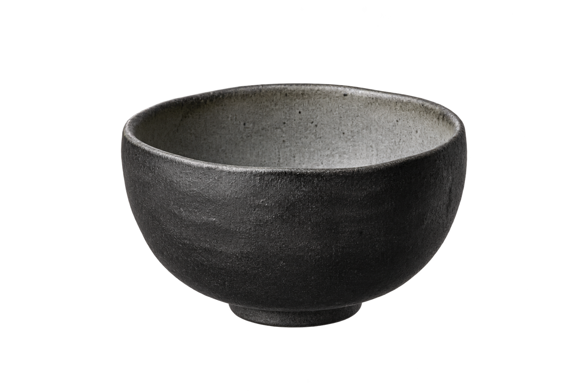
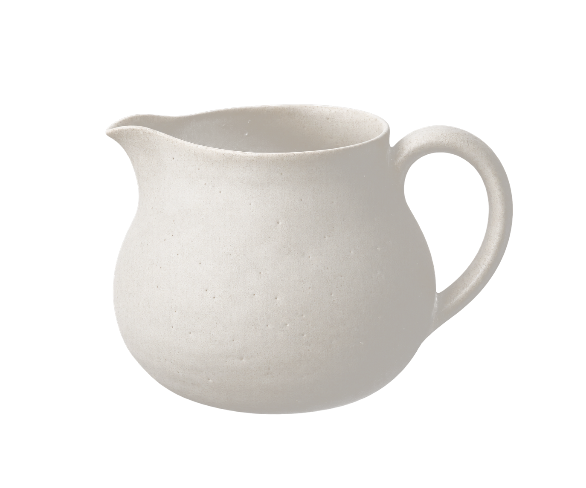
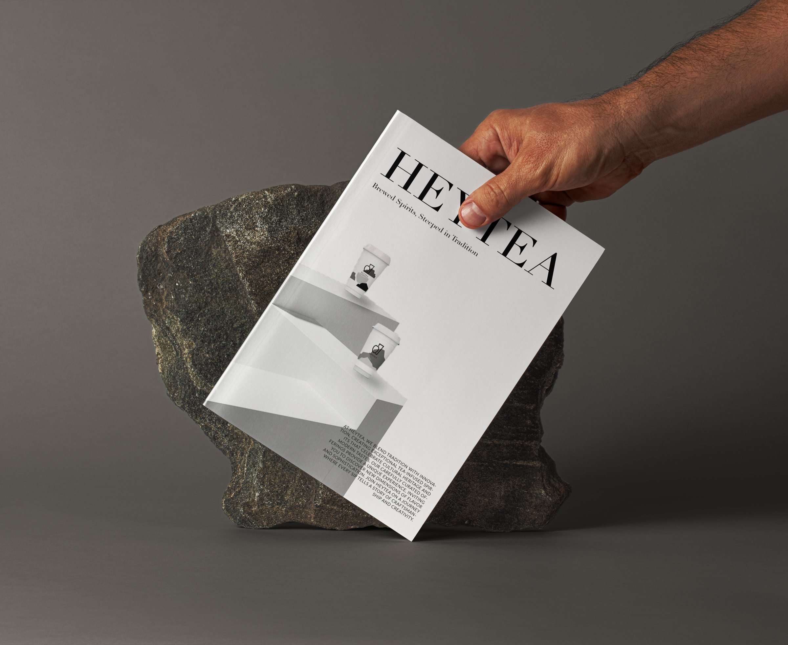

Brand Identity / Visual Design
2024
Tea × Liquor
HEYTEA
A BRAND IDENTITY FOR TEA AND SOCIAL DRINKING.
A conceptual rebrand exploring the space between tea culture and contemporary social drinking through identity, packaging, campaign, and digital experience.

01 / Campaign Idea
BRAND CONCEPT
HEYTEA brings together the cultural depth of tea and the expressive spirit of social drinking, creating a contemporary experience built around ritual, connection, and enjoyment.
I translated familiar forms, materials, and visual references into a contemporary system that can work across multiple applications.
02 / The Opportunity
REBRANDING OPPORTUNITY
The identity needed to retain cultural depth without relying on a traditional visual style. I simplified recognizable references to tea and drinking culture, then applied them through contemporary typography, restrained color, and flexible compositions.
Cultural Roots
Preserve recognizable references to tea, vessels, landscape, and ritual.
Contemporary Expression
Translate those references through a cleaner, more minimal visual language.
Flexible System
Create an identity capable of moving across packaging, campaign, social, and digital experiences.
03 / Cultural References
CULTURAL REFERENCES
The visual language begins with familiar objects surrounding tea and drinking culture: jars, pots, cups, bowls, bottles, and vessels.
These objects informed the campaign’s references to ritual, gathering, sharing, and a slower way of experiencing a drink.



04 / Visual Language
FORM DEVELOPMENT
I reduced familiar cultural objects into a collection of vessels, landscape elements, and monochromatic graphics.
The resulting system can be recomposed across campaign, packaging, print, and digital applications.
05 / Brand Character
BRAND ATTRIBUTES
A restrained visual language communicates quality without relying on excessive decoration.
Familiar objects and landscape references give the identity a recognizable cultural foundation.
Monochromatic color and generous negative space communicate simplicity and clarity.
Organic forms and open compositions create a calmer and more approachable brand experience.
06 / Identity
LOGO SYSTEM
The symbol draws from the shared visual language of tea and drinking vessels, reducing familiar container forms into a simple and recognizable mark. Its compact silhouette allows the identity to move easily across packaging, campaign graphics, printed materials, and digital applications.
FORM
REDUCED TO
A RECOGNIZABLE
MARK.
07 / Typography
TYPOGRAPHY SYSTEM
The typography system balances expressive brand character with functional clarity.
Didot introduces editorial refinement and a sense of ceremony across headlines and campaign moments.
An expressive accent supports selected campaign moments without replacing the core information system.
Inter supports body copy, product information, and interface content where clarity and legibility are the priority.
08 / Color
COLOR PALETTE
The identity uses black, white, and tonal grays to reference the depth and layering of ink while allowing typography, imagery, and illustration to remain the primary visual elements.
09 / Graphic Language
GRAPHIC LANGUAGE
The graphic system expands the identity through vessels, cups, bottles, landscape forms, and ink-inspired textures. Scale, cropping, and composition can shift across applications, allowing the system to remain recognizable without requiring every touchpoint to repeat the same layout.
10 / Campaign
POSTER SYSTEM
The poster series explores how typography, illustration, product imagery, and negative space can shift across different compositions while remaining part of the same visual system.


11 / Physical Experience
PACKAGING APPLICATIONS
Across packaging and physical touchpoints, the identity relies on bold scale, restrained typography, and monochromatic illustration to create recognition without visual excess.



12 / Content
SOCIAL MEDIA APPLICATIONS
Social content extends the campaign through flexible compositions rather than a fixed template, allowing the identity to adapt while preserving its typography, imagery, and visual rhythm.

13 / Digital
DIGITAL APPLICATION
The digital experience carries the same visual principles into a more functional environment. Typography, monochromatic imagery, and negative space support the brand without competing with usability.


14 / Campaign System
FINAL APPLICATIONS
The final system applies the identity across packaging, editorial design, social content, and digital screens. Shared typography, monochromatic imagery, and graphic forms keep the applications visually consistent.
15 / Reflection
REFLECTION
I treated cultural references as source material for form, contrast, and composition. Reducing familiar objects to these elements helped me create a contemporary system without copying traditional motifs literally.